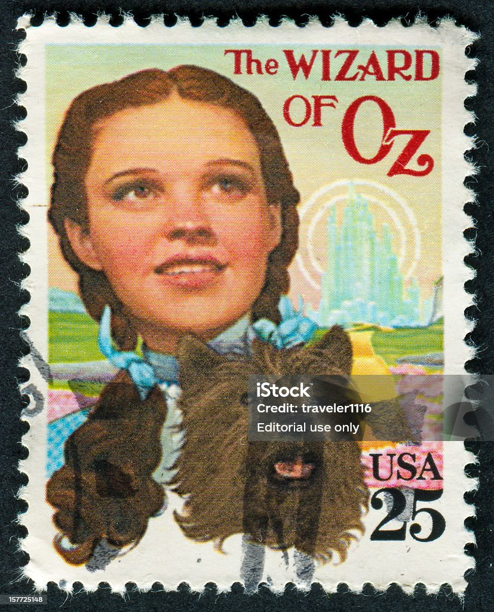

Dorothy lived in the midst of the great Kansas prairies, with Uncle Henry, who was a farmer, and Aunt Em, who was the farmer's wife.
Their house was small, for the lumber to build it had to be carried by wagon many miles. There were four walls, a floor, and a roof, which made one room; and this room contained a rusty looking cookstove, a cupboard for the dishes, a table, three or four chairs, and the beds.
Uncle Henry and Aunt Em had a big bed in one corner, and Dorothy a little bed in another corner. There was no garret at all, and no cellar except a small hole dug in the ground, called a cyclone cellar.
When Dorothy was standing in the doorway and looked around, she could see nothing but the great gray prairie on every side. Not a tree nor a house broke the broad sweep of flat country that reached the edge of the sky in all directions.
Toto was not gray. He was a little black dog, with long silky hair and small black eyes that twinkled merrily on either side of his funny, wee nose.
Image source/license: Public Domain